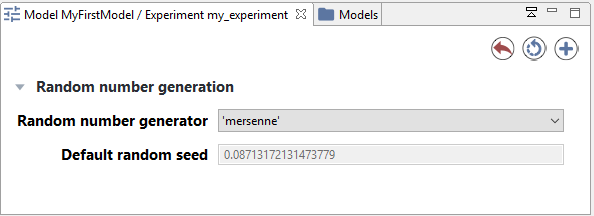
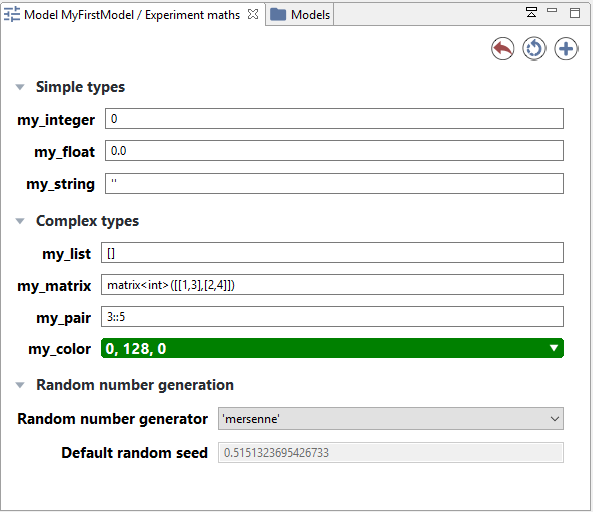

Parameters View
In the case of an experiment, the modeler can define the parameters he wants to be able to modify to explore the simulation, and thus the ones he wants to be able to display and alter in the GUI interface.
It important to notice that all modification made in the parameters are used for simulation reload only. Creation of a new simulation from the model will erase the modifications.
Table of contents
Built-in parameters
Every GUI experiment displays a pane named "Parameters" containing at least two built-in parameters related to the random generator:
- the Random Number Generator, with a choice between 3 RNG implementations,
- the Random Seed

Parameters View
The modeler can define himself parameters that can be displayed in the GUI and that are sorted by categories. Note that the interface will depend on the data type of the parameter: for example, for integer or float parameters, a simple text box will be displayed whereas a color selector will be available for color parameters. The parameters value displayed are the initial value provided to the variables associated to the parameters in the model.

The above parameters view is generated from the following code:
global
{
int i;
float f;
string s;
list l;
matrix m;
pair p;
rgb c;
}
experiment maths type: gui {
parameter "my_integer" var: i <- 0 category:"Simple types";
parameter "my_float" var: f <- 0.0 category:"Simple types";
parameter "my_string" var: s <- "" category:"Simple types";
parameter "my_list" var: l <- [] category:"Complex types";
parameter "my_matrix" var: m <- matrix([[1,2],[3,4]]) category:"Complex types";
parameter "my_pair" var: p <- 3::5 category:"Complex types";
parameter "my_color" var: c <- #green category:"Complex types";
output {}
}
Click on Edit button in case of list or map parameters or the color or matrix will open an additional window to modify the parameter value.
Modification of parameters values
The modeler can modify the parameter values. After modifying the parameter values, you can reload the simulation by clicking on the top-right circular arrow button.
You can also add a new simulation to the old one, using those new parameters, by clicking on the top-right plus symbol button.
If he wants to come back to the initial value of parameters, he can click on the top-right red curved arrow of the parameters view.